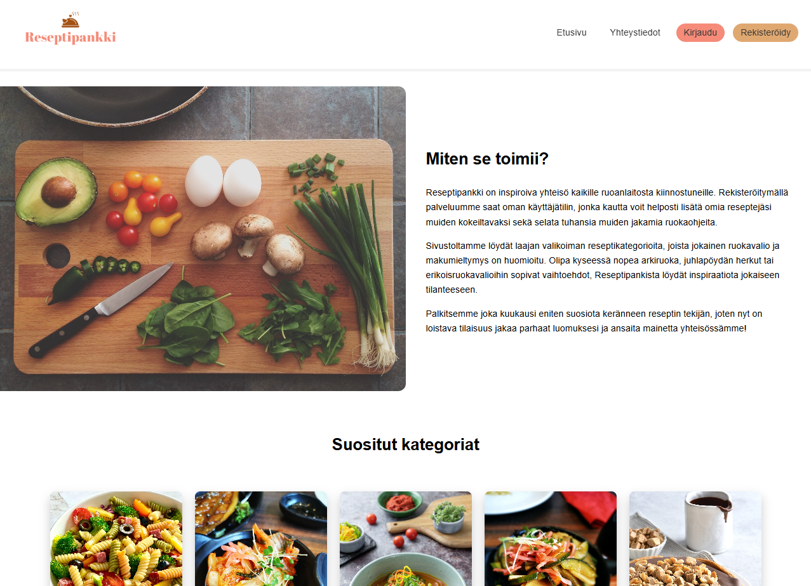

Reseptipankki
Käyttäjien yhteinen reseptialusta | HTML + CSS + JavaScript + PHP
Kuvaus
Yhteisöllinen sivusto, jossa käyttäjät voivat lisätä ja selata reseptejä. Alkuperäinen PHP/tietokanta-versio muutettu HTML/CSS/JS-muotoon.
Roolini ja toteutus
Harjoittelin frontend- ja backend-yhdistämistä, tietokantoja ja MVC-arkkitehtuuria, toteutin selkeän ja saavutettavan käyttöliittymän.
Keskeiset ominaisuudet
- Saavutettavuuspainotteinen käyttöliittymä
- Käyttäjien reseptien lisääminen ja selailu (PHP-versiona)
- MVC-arkkitehtuuri ja tietokantayhteydet
Opitut asiat
PHP-backend, SQL ja MVC-malli perusteet, saavutettavat verkkosivut.
Teknologiat
HTML, CSS, JavaScript, PHP, MySQL

